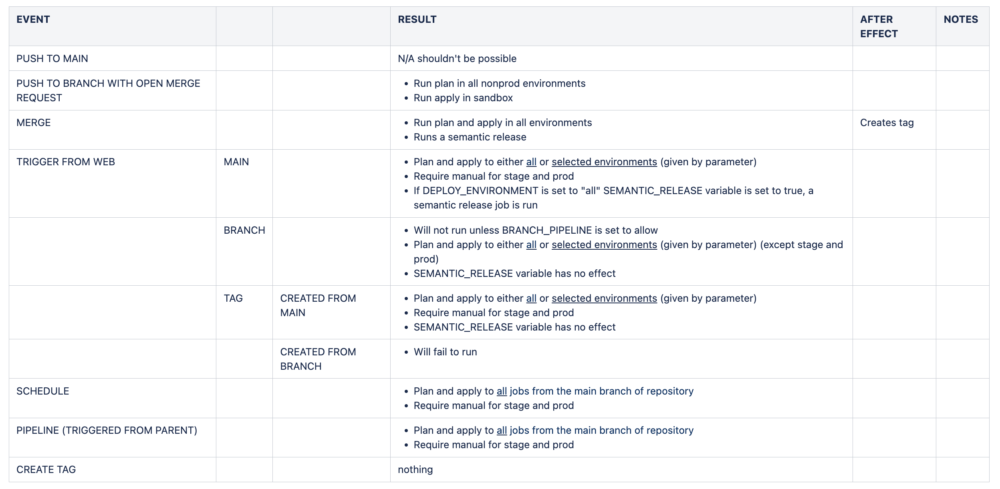

Introduction
Date: 21 Mar 23
It had been decided in our organisation that we would migrate our repositories from a self-hosted gitlab instance to a SaaS solution on gitlab.com. There are a number of benefits to this but mainly you are saving time spent mangaging it. Having a self hosted instance can have some benefits mostly to do with customisation. K24.
Software solutions
Enterprise: A solution where software is purchased from some company and then installed on your organisations servers.
Bespoke: A solution where software is developed for the needs of a specific clients use case/
SaaS: A solution where a provider hosts a cloud application and makes it available to users.
Benefits of each solution
Pros:
| SaaS | Bespoke | Enterprise |
|---|---|---|
| Low Price | Indivually crafted solution | Lower upfront costs than bespoke |
| Self service | Flexible | |
| Customizable | Greater scalability | |
Cons:
| SaaS | Bespoke | Enterprise |
|---|---|---|
| Licensing issues | High initial costs | Can take time to customize |
| Loss of control | Time to develop solution |
This work involved some co-ordination with a team called Delivery systems. One of the requirements made by the security team for the shift to gitlab.com was to reduce the number of actions that the deploying role could perform. That is to say, have a custom role for each terraform repository with it sown policy and restrict the number of actions it could carry out to reduce possible attack vectors. After some preliminary research and arranging a meeting with delivery systems, we decided that this would be a large task to undertake and that it would be out of the scope of this particular project, so a ticket was raised to investigate further.
K18.
For this work I adhered to a Plan Do Act Check cycle to ensure I was getting the results I required. First, I gathered information relating to the requirements and best practices, alongside what we were already doing to deploy pipelines in the team. Then I wrote up a “Gold Standard” pipeline that all (required) terraform pipelines should match. After having written this, I ran out wrote an implementation of the standard and tested it against one of repos. There were some problems, for example some of the requirements were not possible to implement, or did not exist as features on the gitlab platform so I had to go back and modify the standard with the possibilities and restrictions of the platform in mind. From then I began the PDAC cycle again. There are other methods I could have used to plan the work for instance:
Affinity mapping is useful in the early stages of planning when trying to ascertain the relevant elements of a project. The method is very simple, a group of people come togther (either in person or virtually). They write several sticky notes and place them on a board. The notes are reorganised based on “affinity” i.e. how similar they are. This helps to identify emerging themes and priorities in a project.
Impact mapping is useful for the prioritising of features and discovering concerete steps to be taken to arrive at the main goal. The method requires that you establish a main goal. It is important that this goal is specific, measurable, acton-oriented and reallistic. From there, it is necessary to identify the relevant actors that affect the ultimate goal. Then identify the impact these actors have on the agreed goal. From this point, it should be easy to identify concrete deliverables.
Affinity mapping, impact maps could have been used to plan the work, but since I was carrying out most of the work myself and because the requirements and steps to achieve them were relatively well defined I didn’t think either of them were appropriate.
 (The table laying out the gold standard behviour of a deployment pipeline)